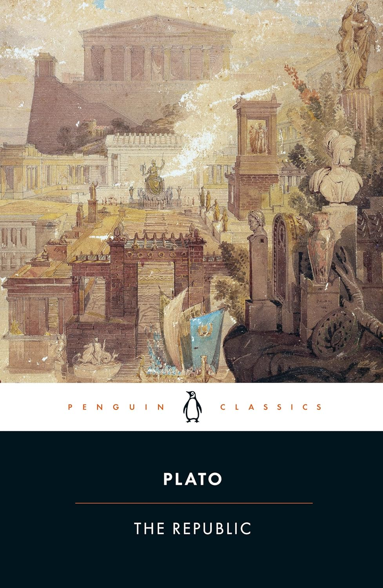

MeditationsMeditações
Marcus Aurelius
MeditationsMeditações
Slow mornings with this one. Book V is destroying me, gently.Manhãs lentas com este. O Livro V está a destruir-me, gentilmente.
Dant's is a quiet corner of the internet for the classics, philosophy, and the occasional novel that won't let me sleep. No ratings out of ten, no hot takes — just margins, marginalia, and the books I'd hand you across a kitchen table. Dant's é um cantinho tranquilo da internet dedicado aos clássicos, à filosofia e ao romance ocasional que não me deixa dormir. Sem notas de um a dez, sem opiniões precipitadas — apenas anotações nas margens e os livros que colocaria nas tuas mãos.
" The unexamined life is not worth living — but the examined life, examined too closely, becomes a kind of trembling. A vida não examinada não vale a pena ser vivida — mas a vida examinada, examinada de perto demais, torna-se uma espécie de tremor. "From this week's notebook · on Plato's ApologyDo caderno desta semana · sobre a Apologia de Platão
The world breaks everyone, and afterward, some are strong at the broken places. Liberdade é pouco. O que desejo ainda não tem nome.
— Ernest Hemingway · A Farewell to Arms Clarice Lispector · A Paixão Segundo G.H.Slow mornings with this one. Book V is destroying me, gently.Manhãs lentas com este. O Livro V está a destruir-me, gentilmente.
Just past the Grand Inquisitor. Need a week to recover.Acabei de passar o Grande Inquisidor. Preciso de uma semana para recuperar.
Reading slowly with a map and a strong coffee.A ler devagar com um mapa e um café forte.
I keep underlining everything. The book is mostly ink now.Continuo a sublinhar tudo. O livro é sobretudo tinta agora.

I came back to The Republic this winter expecting a familiar conversation and found a book that argues with me from the first page. Plato isn't building a city — he's building a mirror. What you see in it depends on how honestly you're willing to look. Voltei à República neste inverno à espera de uma conversa familiar e encontrei um livro que discute comigo desde a primeira página. Platão não está a construir uma cidade — está a construir um espelho. O que vês nele depende de quão honestamente estás disposto a olhar.
A book that asks what justice would feel like if you could afford to be honest about it. Um livro que pergunta como seria a justiça se te pudesses dar ao luxo de ser honesto sobre ela.

You know that feeling of walking alone late at night? The street completely empty, the silence… it feels like your thoughts start speaking louder than the city itself. That's exactly the atmosphere Dostoyevsky creates from the very first pages of White Nigh… Sabe aquela sensação de andar sozinho de madrugada? A rua completamente vazia, o silêncio... parece que a nossa cabeça começa a falar mais alto que a própria cidade. É exatamente esse clima que o Dostoiévski cria logo nas primeiras páginas de Noites Branca…
Read review →Ler resenha →Where to begin if Marcus, Seneca, and Epictetus all feel daunting.Por onde começar se Marco Aurélio, Séneca e Epicteto parecem intimidantes.
Long novels for long nights — Dostoevsky, Tolstoy, Chekhov.Romances longos para noites longas — Dostoiévski, Tolstói, Tchékhov.
A reading order that rewards patience over completion.Uma ordem de leitura que recompensa a paciência em vez da conclusão.
Books that read like someone thinking out loud, addressed to you.Livros que se leem como alguém a pensar em voz alta, dirigidos a ti.
Under 200 pages. Each one rearranges something in you.Menos de 200 páginas. Cada um reorganiza algo em ti.
Camus, Kierkegaard, Frankl — read for company, not for despair.Camus, Kierkegaard, Frankl — ler para ter companhia, não para o desespero.
For a long time I tried to read fast — to keep up, to finish, to count. Then a friend gave me a paperback of Meditations with one sentence underlined, and I realized I'd been confusing pages-per-week with thinking. Durante muito tempo tentei ler depressa — para me manter a par, para terminar, para contar. Depois um amigo deu-me um livro de bolso das Meditações com uma frase sublinhada, e percebi que tinha confundido páginas por semana com pensamento.
This site is the notebook I wished I'd kept earlier. I write about the classics and philosophy mostly, with the occasional novel that earns its way in. No reviews to please an algorithm — just honest letters about what a book did to my week. Este site é o caderno que gostaria de ter começado mais cedo. Escrevo sobretudo sobre os clássicos e a filosofia, com o romance ocasional que merece a sua entrada. Sem críticas para agradar a um algoritmo — apenas cartas honestas sobre o que um livro fez à minha semana.